Code
library(dplyr)
library(readr)
library(ggokabeito)
library(ggplot2)
library(brms)
options(mc.cores = parallel::detectCores())
library(tidybayes)
library(stringr)Comparing networks of full, partial, and negative cases of colexification. Nodes are meanings, edges are weighted by frequency of full/partial/negative colexification. Comparisons are performed based on clustering similarities of networks, using ARI (Adjusted Rand Index) and AMI (Adjusted Mutual Information). Clustering is based on infomap.
This is in line with the methods employed by Jackson et al. 2019 and subsequent work by List & Tjuka in a few papers. For reference, here are a few values comparing (full) colexification networks for different semantic domains by how similar they are across language families, from Tjuka et al. 2024
The analysis shows that the networks in the body part domain had a mean ARI of 0.3 (sd = 0.17). In comparison, the mean ARI of the emotion networks was 0.16 (sd = 0.29) and for colour m = 0.14 (sd = 0.26). The mean values of the AMI comparison across the three domains yielded similar results: body part m = 0.37 (sd = 0.16), emotion m = 0.18 (sd = 0.3), and colour m = 0.16 (sd = 0.28)
In other words, if you compare the colexification network of emotion words of different language families, you get an ARI of 0.16 vs. one of 0.3 for body parts. This could be interpreted as body part colexifications being more homogeneous across families (if ignoring the huge SDs –which we shouldn’t but this is just for illustration for us).
Now, to our data. We have the following comparison pairs:
Points (1) - (3) are the basic thing everyone checks for. I will call these global comparisons in what follows. One thing to keep in mind is that the nodes (meanings) of these networks differ. So their ARIs/AMIs are upper-bounded: they can’t be identical because they cover partially different meanings. This is an issue that also affects other work but it’s important to keep in mind. Also, it probably is less of an issue when comparing within domains where data-per-node may be less sparse.
Given the above, it makes sense to not interpret AMI/ARI-values in absolute terms but only relative to each other. So it also makes sense to ask: What’s the ARI/AMI within each type (full, partial, negative)? There are a few ways to test this.
One way is to randomly split the data of each type in half and compare the two halves –and to do this 100 times to get an idea of how much the random sampling affects the process. I call these random splits in the following
The other way is to compare networks across language families, as done by others. It makes sense to do so only for language families with enough data because otherwise we’ll get artificially high ARIs/AMIs (if, say, two families consist of a single positive case and they match then they’d have an ARI/AMI of 1), or low ones (if no node matches). I filtered the data to retain only families with at least 150 cases of the relevant type (\(\geq 150\) full colexifications; …). I will call these family comparisons in the following. This gives a comparison of
And, finally, as discussed, we can also compare random subsamples of the negative cases and partial colexification cases that match, in number, the amount of full colexifications. In this way, there’s exactly the same amount of observations per type. I did 100 comparisons of such random subsamples between these three types. This gives 100 comparisons between:
I will call these matching comparisons
library(dplyr)
library(readr)
library(ggokabeito)
library(ggplot2)
library(brms)
options(mc.cores = parallel::detectCores())
library(tidybayes)
library(stringr)df <- read_tsv('../data/colexification/results/network-comparison00all.tsv') %>%
select(-BCUBES) %>%
filter(!row_number() %in% c(1,3,4)) %>%
print()# A tibble: 3 × 4
NET_A NET_B ARI AMI
<chr> <chr> <dbl> <dbl>
1 negFull full 0.0120 0.0324
2 negPartial partial 0.00247 0.00788
3 full partial 0.177 0.431 In words, partial and full colexification networks are much more similar (both ARI and AMI) to each other than they are to negative cases subsampled to match the amount of data they cover. They are as similar as the mean emotion network when compared across families.
However, since it could be that \(0.196\)/\(0.46\) is artificially high/low due to idiosyncracies of the meanings involved, it makes sense to do look at the other comparisons
Remember that we are comparing 100 different splits of each type.
df_full <- read_tsv('../data/colexification/results/network-comparison01full.tsv') %>%
select(ARI, AMI) %>%
mutate(type = 'full')
df_partial <- read_tsv('../data/colexification/results/network-comparison01partial.tsv') %>%
select(ARI, AMI) %>%
mutate(type = 'partial')
df_neg <- read_tsv('../data/colexification/results/network-comparison01neg.tsv') %>%
select(ARI, AMI) %>%
mutate(type = 'neg')
df <- rbind(df_full, df_partial) %>% rbind(df_neg)
df %>%
group_by(type) %>%
summarize(ARI.mean = mean(ARI),
ARI.sd = sd(ARI),
AMI.mean = mean(AMI),
AMI.sd = sd(AMI))# A tibble: 3 × 5
type ARI.mean ARI.sd AMI.mean AMI.sd
<chr> <dbl> <dbl> <dbl> <dbl>
1 full 0.809 0.0219 0.905 0.0103
2 neg 0.000885 0.000763 0.00236 0.00202
3 partial 0.707 0.0278 0.833 0.0126 ARIs/AMIs are much higher within each type. This is a suggestion that full/partial colexifications colexifications are more similar to full/partial colexifications than they are to partial/full colexifications (from the global comparisons).
Here’s a visualization of ARI distributions
ggplot(df, aes(x = ARI, fill = type)) +
geom_histogram(alpha=0.8, position='identity', col='white', bins = 40) +
theme_minimal(base_size = 21) And the same for AMI values
ggplot(df, aes(x = AMI, fill = type)) +
geom_histogram(alpha=0.8, position='identity', col='white', bins = 40) +
theme_minimal(base_size = 21) 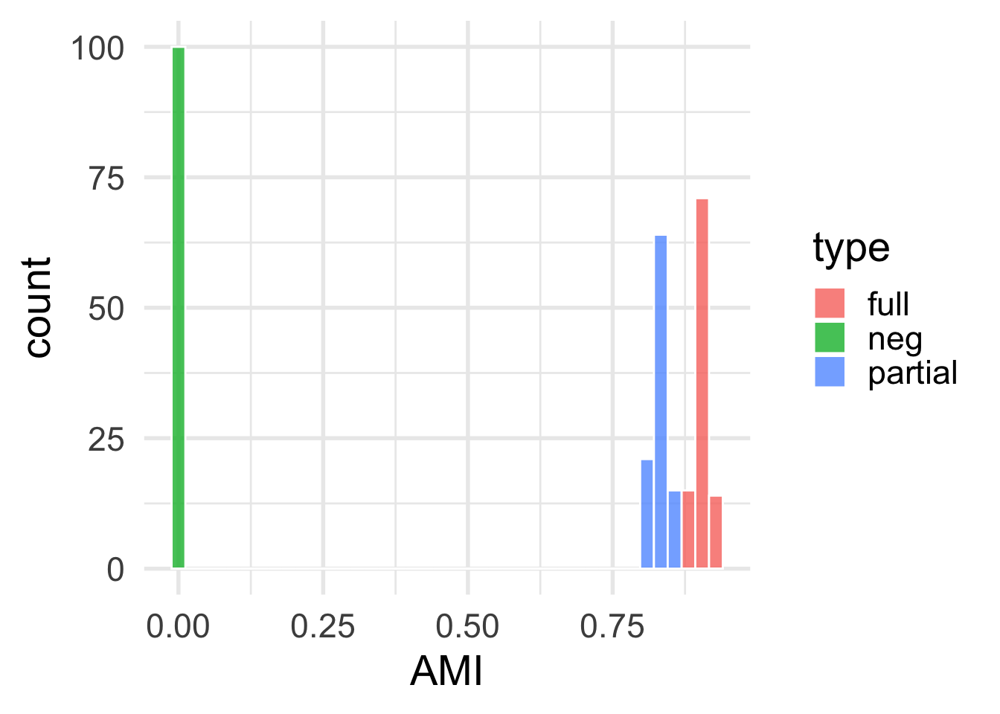
Before filtering, there were \(191\) different languages families for each type. After keeping language families with at least 150 observations per family: \(19\) families for full colexification; \(47\) families for partial colexification.
df_full <- read_tsv('../data/colexification/results/subgraph-comparison/full-network-comparison150fam.tsv') %>%
mutate(type = 'full')
df_partial <- read_tsv('../data/colexification/results/subgraph-comparison/partial-network-comparison150fam.tsv') %>%
mutate(type = 'partial')
df_fam <- rbind(df_full, df_partial)
df_fam %>%
group_by(type) %>%
summarize(ARI.mean = mean(ARI),
ARI.sd = sd(ARI),
AMI.mean = mean(AMI),
AMI.sd = sd(AMI))# A tibble: 2 × 5
type ARI.mean ARI.sd AMI.mean AMI.sd
<chr> <dbl> <dbl> <dbl> <dbl>
1 full 0.659 0.0924 0.755 0.0770
2 partial 0.355 0.158 0.449 0.146 Here’s a visualization of ARI distributions
ggplot(df_fam, aes(x = ARI, fill = type)) +
geom_histogram(alpha=0.8, position='identity', col='white', bins = 40) +
theme_minimal(base_size = 21) 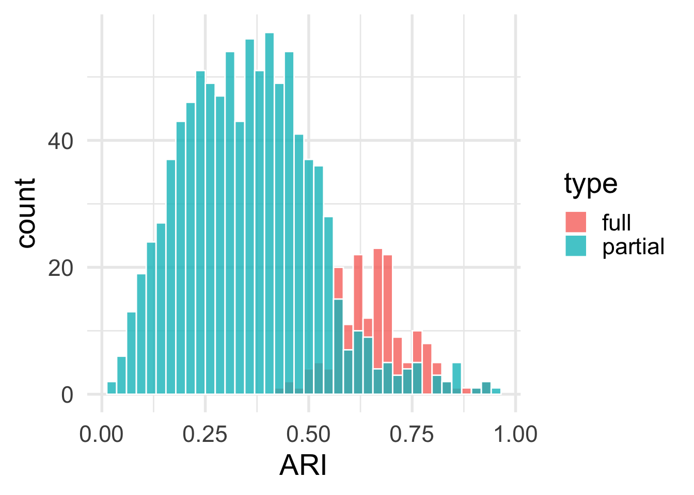
And the same for AMI
Here’s a visualization of ARI distributions
ggplot(df_fam, aes(x = AMI, fill = type)) +
geom_histogram(alpha=0.8, position='identity', col='white', bins = 40) +
theme_minimal(base_size = 21) And here’s a Beta regression:
m <- brm(formula = bf(ARI ~ type, phi ~ type),
data = df_fam,
family = Beta(),
chains = 4,
iter = 2000,
warmup = 1000,
file = '01beta-reg'
)
posterior_beta <- m %>%
gather_draws(`b_.*`, regex = TRUE) %>%
mutate(component = ifelse(str_detect(.variable, "phi_"), "Precision", "Mean"),
intercept = str_detect(.variable, "Intercept"))
ggplot(posterior_beta, aes(x = .value, y = forcats::fct_rev(.variable), fill = component)) +
geom_vline(xintercept = 0) +
stat_halfeye(aes(slab_alpha = intercept),
.width = c(0.8, 0.95), point_interval = "median_hdi") +
scale_fill_viridis_d(option = "viridis", end = 0.6) +
scale_slab_alpha_discrete(range = c(1, 0.4)) +
guides(fill = "none", slab_alpha = "none") +
labs(x = "Coefficient", y = "Variable",
caption = "80% and 95% credible intervals shown in black") +
facet_wrap(vars(component), ncol = 1, scales = "free_y") +
theme_minimal() +
scale_fill_okabe_ito()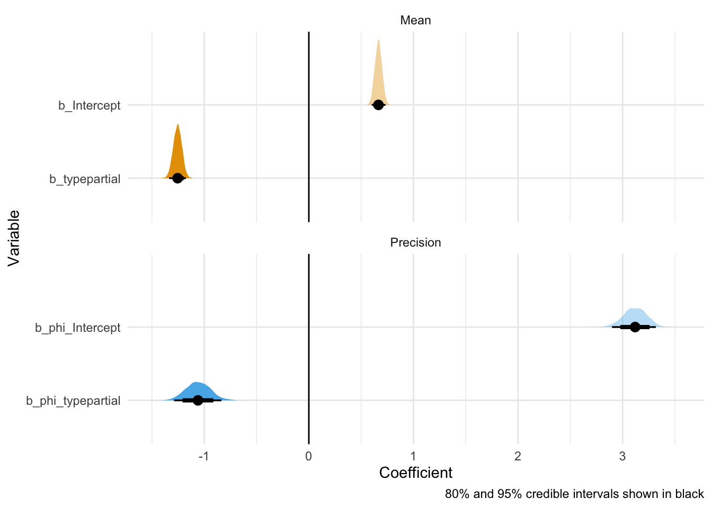
If I’m not too mistaken on my interpretation of Beta regressions, then this is pretty much giving us what we expected: higher mean for full vs partial; and higher variance/lower \(\phi\) for partial vs. full.
I did not add population-level predictors for families because that’s a little tricky given the data format. Observations are ARIs/AMIs of pairs of families. So sometimes Atlantic-Congo is in column A being compared with Hmong-Mien in column B, but it may also be in column B when compared with Indo-European. So adding predictors for column A and column B would treat Atlantic-Congo differently for no reason in these two cases. That’s not good. And having a random effect for each family-pair is also iffy. So I left it as is.
Marginal/conditional effects:
m %>%
conditional_effects()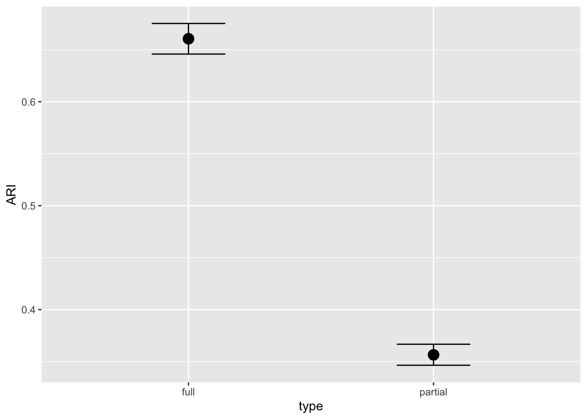
And posterior predictive, just visually confirming intuitions concerning peaky/spread distributions depending on the group:
newdata = tibble(type = c('full', 'partial'))
post_pred <- m %>% predicted_draws(newdata = newdata)
ggplot(post_pred, aes(x = .prediction, fill = type)) +
stat_halfeye(alpha=0.6) +
scale_fill_okabe_ito() +
theme_minimal()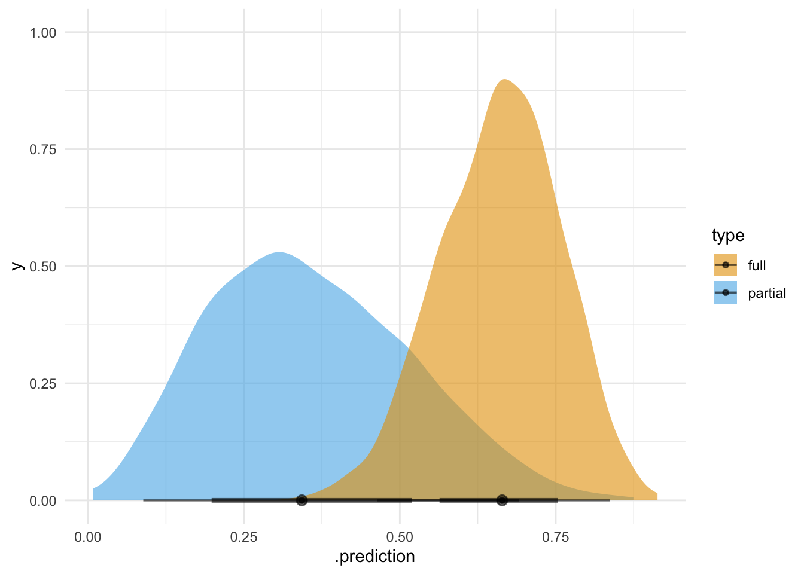
Same thing for AMI but focusing on the estimates only for brevity:
m <- brm(formula = bf(AMI ~ type, phi ~ type),
data = df_fam,
family = Beta(),
chains = 4,
iter = 2000,
warmup = 1000,
file = '02beta-reg'
)
posterior_beta <- m %>%
gather_draws(`b_.*`, regex = TRUE) %>%
mutate(component = ifelse(str_detect(.variable, "phi_"), "Precision", "Mean"),
intercept = str_detect(.variable, "Intercept"))
ggplot(posterior_beta, aes(x = .value, y = forcats::fct_rev(.variable), fill = component)) +
geom_vline(xintercept = 0) +
stat_halfeye(aes(slab_alpha = intercept),
.width = c(0.8, 0.95), point_interval = "median_hdi") +
scale_fill_viridis_d(option = "viridis", end = 0.6) +
scale_slab_alpha_discrete(range = c(1, 0.4)) +
guides(fill = "none", slab_alpha = "none") +
labs(x = "Coefficient", y = "Variable",
caption = "80% and 95% credible intervals shown in black") +
facet_wrap(vars(component), ncol = 1, scales = "free_y") +
theme_minimal() +
scale_fill_okabe_ito()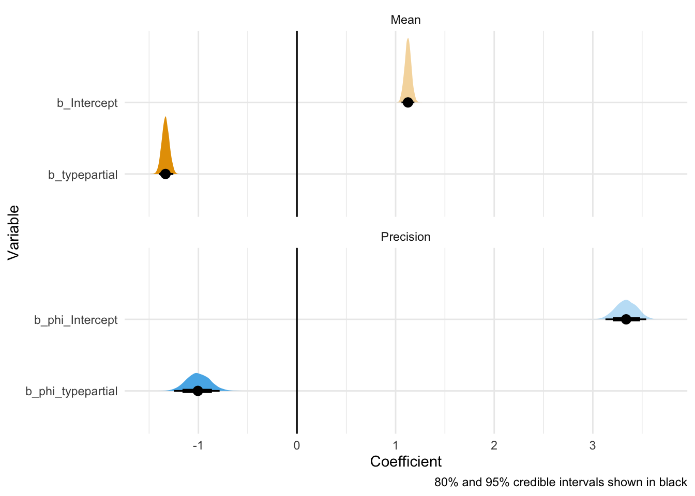
So this is very similar to ARIs. I’ll skip the marginal effects and posterior checks.
Doing the same but now looking at only the families covered by both partial and full colexifications (19 in total; same ones as the ones for the full colexification cases), we have the following values:
df_fam.o <- df_fam %>%
mutate(NET_A.o = ifelse(NET_A < NET_B,
NET_A, NET_B),
NET_B.o = ifelse(NET_A < NET_B,
NET_B, NET_A)
) %>%
select(-NET_A, -NET_B) %>%
rename(NET_A = NET_A.o,
NET_B = NET_B.o)
wide_ARI <- df_fam.o %>%
select(-AMI) %>%
tidyr::pivot_wider(names_from = type, values_from = ARI) %>%
mutate(val = 'ARI')# %>%
# tidyr::drop_na()
wide_AMI <- df_fam.o %>%
select(-ARI) %>%
tidyr::pivot_wider(names_from = type, values_from = AMI) %>%
mutate(val = 'AMI') #%>%
# tidyr::drop_na()
df_fam_shared <- rbind(wide_ARI, wide_AMI) %>%
tidyr::drop_na()
df_fam_shared %>%
tidyr::pivot_longer(cols = c(full, partial), names_to = 'type') %>%
group_by(type, val) %>%
summarize(value.mean = mean(value),
value.sd = sd(value)
)# A tibble: 4 × 4
# Groups: type [2]
type val value.mean value.sd
<chr> <chr> <dbl> <dbl>
1 full AMI 0.755 0.0770
2 full ARI 0.659 0.0924
3 partial AMI 0.485 0.107
4 partial ARI 0.370 0.117 df_fam_shared <- df_fam_shared %>%
tidyr::pivot_longer(cols = c(full, partial), names_to = 'type') %>%
tidyr::pivot_wider(names_from = val, values_from = value)Here’s a visualization of ARI distributions for this subset
ggplot(df_fam_shared, aes(x = ARI, fill = type)) +
geom_histogram(alpha=0.8, position='identity', col='white', bins = 40) +
theme_minimal(base_size = 21) 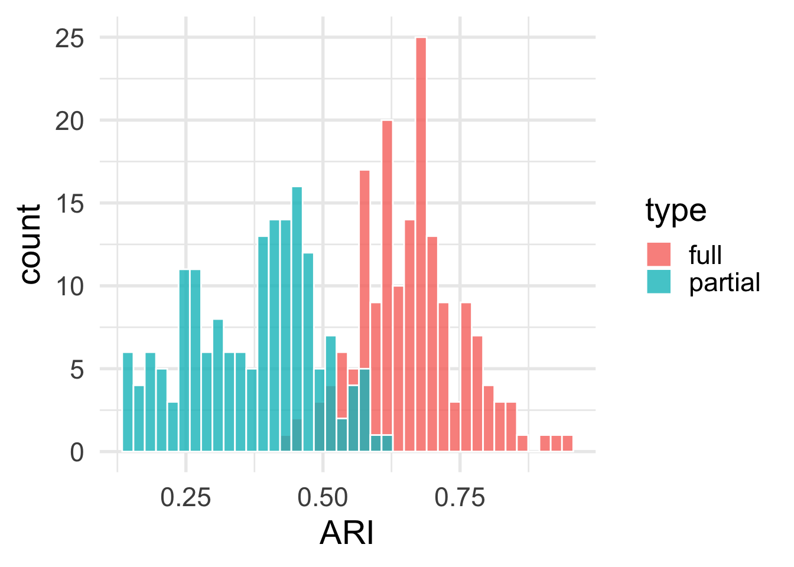
The values for the full networks do not change –because it’s the same data. The values of the partial colexifications, however, barely change. They slightly increase but that’s it. In other words, focusing only on comparing the same 19 families doesn’t help dispelling the idea that partial and full are a lot more similar across their respective families than they are to each other “globally”.
Here’s a visualization of ARI distributions for this subset:
ggplot(df_fam_shared, aes(x = AMI, fill = type)) +
geom_histogram(alpha=0.8, position='identity', col='white', bins = 40) +
theme_minimal(base_size = 21) 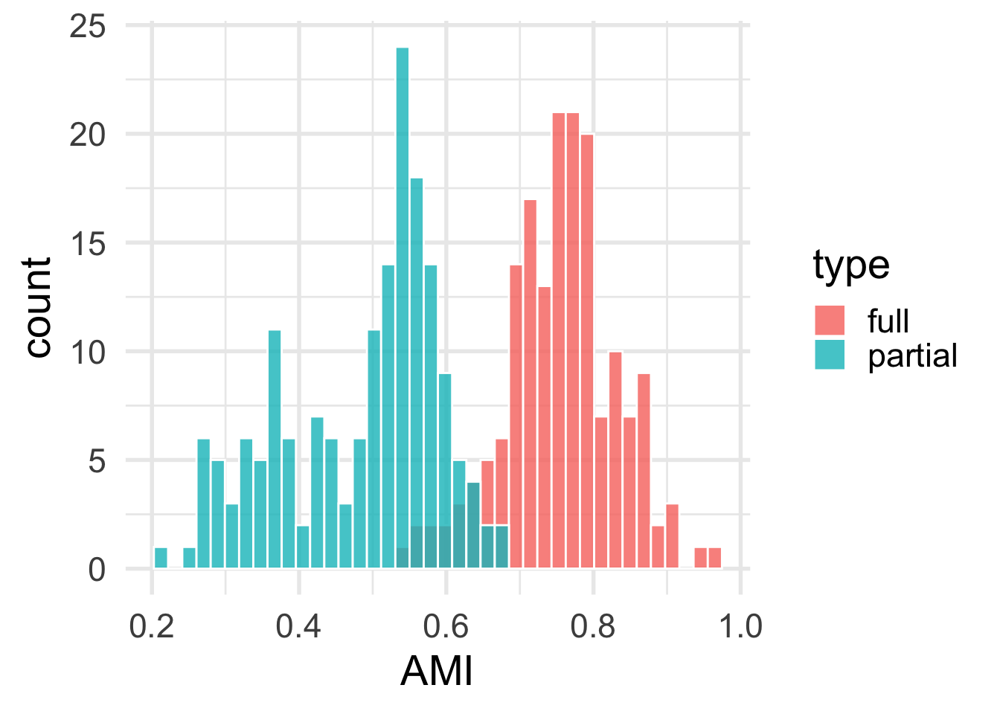
And now for the Beta regressions on this subset, starting with predicting ARI based on type:
m <- brm(formula = bf(ARI ~ type, phi ~ type),
data = df_fam_shared,
family = Beta(),
chains = 4,
iter = 2000,
warmup = 1000,
file = '03beta-reg'
)
posterior_beta <- m %>%
gather_draws(`b_.*`, regex = TRUE) %>%
mutate(component = ifelse(str_detect(.variable, "phi_"), "Precision", "Mean"),
intercept = str_detect(.variable, "Intercept"))
ggplot(posterior_beta, aes(x = .value, y = forcats::fct_rev(.variable), fill = component)) +
geom_vline(xintercept = 0) +
stat_halfeye(aes(slab_alpha = intercept),
.width = c(0.8, 0.95), point_interval = "median_hdi") +
scale_fill_viridis_d(option = "viridis", end = 0.6) +
scale_slab_alpha_discrete(range = c(1, 0.4)) +
guides(fill = "none", slab_alpha = "none") +
labs(x = "Coefficient", y = "Variable",
caption = "80% and 95% credible intervals shown in black") +
facet_wrap(vars(component), ncol = 1, scales = "free_y") +
theme_minimal() +
scale_fill_okabe_ito()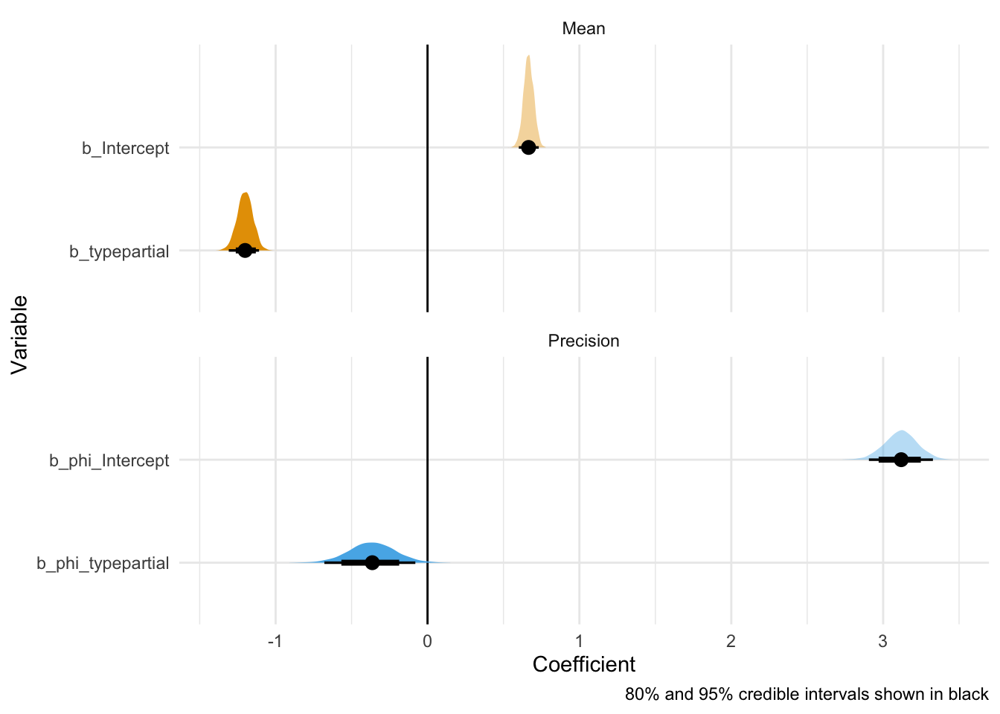
Similar overall trend but \(\phi\) decreased for partial which could suggest that the larger number of families was partially responsible for the wider distribution of ARI values.
Checking AMIs:
m <- brm(formula = bf(AMI ~ type, phi ~ type),
data = df_fam_shared,
family = Beta(),
chains = 4,
iter = 2000,
warmup = 1000,
file = '04beta-reg'
)
posterior_beta <- m %>%
gather_draws(`b_.*`, regex = TRUE) %>%
mutate(component = ifelse(str_detect(.variable, "phi_"), "Precision", "Mean"),
intercept = str_detect(.variable, "Intercept"))
ggplot(posterior_beta, aes(x = .value, y = forcats::fct_rev(.variable), fill = component)) +
geom_vline(xintercept = 0) +
stat_halfeye(aes(slab_alpha = intercept),
.width = c(0.8, 0.95), point_interval = "median_hdi") +
scale_fill_viridis_d(option = "viridis", end = 0.6) +
scale_slab_alpha_discrete(range = c(1, 0.4)) +
guides(fill = "none", slab_alpha = "none") +
labs(x = "Coefficient", y = "Variable",
caption = "80% and 95% credible intervals shown in black") +
facet_wrap(vars(component), ncol = 1, scales = "free_y") +
theme_minimal() +
scale_fill_okabe_ito()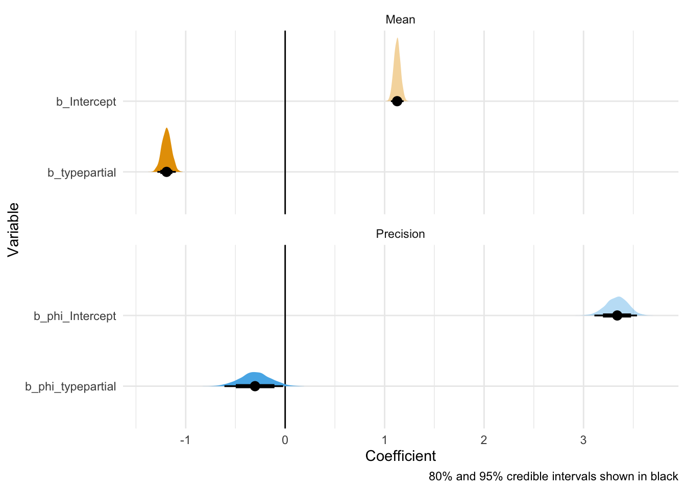
Scarily similar estimates. The intercept (full) is different but everything else is almost the same as for the ARIs.
df <- read_tsv('../data/colexification/results/network-comparison02all.tsv') %>%
select(-BCUBES) %>%
mutate(NET_A = ifelse(NET_A == 'negPartial', 'negative', NET_A),
NET_B = ifelse(NET_B == 'negPartial', 'negative', NET_B)) %>%
mutate(pair = paste0(NET_A, '-', NET_B))
df %>% group_by(pair) %>% summarize(mean.ARI = mean(ARI),
sd.ARI = sd(ARI),
mean.AMI = mean(AMI),
sd.AMI = sd(AMI)) %>%
print()# A tibble: 3 × 5
pair mean.ARI sd.ARI mean.AMI sd.AMI
<chr> <dbl> <dbl> <dbl> <dbl>
1 negative-full 0.00247 0.00290 0.00528 0.00664
2 negative-partial 0.00370 0.00420 0.00828 0.00805
3 partial-full 0.182 0.0109 0.422 0.00898The means are almost the same than what we got for the global comparisons.
Let’s visualize the distribution of ARI values:
ggplot(df, aes(x = ARI, fill = pair)) +
geom_histogram(alpha=0.8, position='dodge', col='white', bins = 40) +
theme_minimal(base_size = 21) 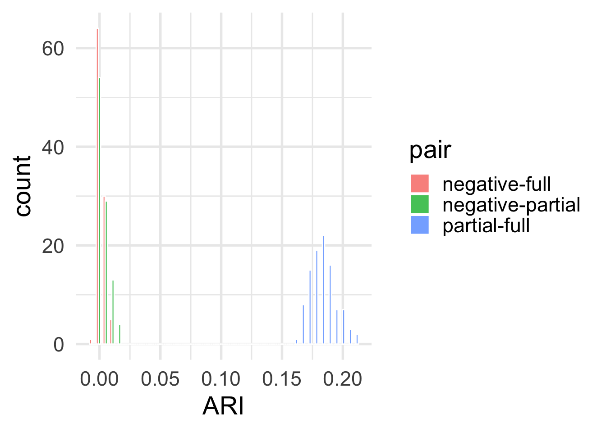
And here are the AMIs:
ggplot(df, aes(x = AMI, fill = pair)) +
geom_histogram(alpha=0.8, position='dodge', col='white', bins = 40) +
theme_minimal(base_size = 21) 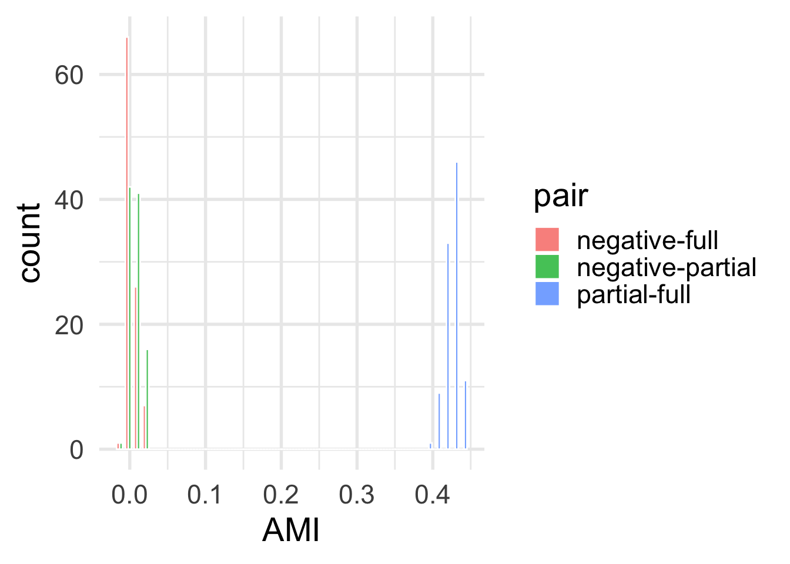
In short: The global results are robust to this kind of subsampling.